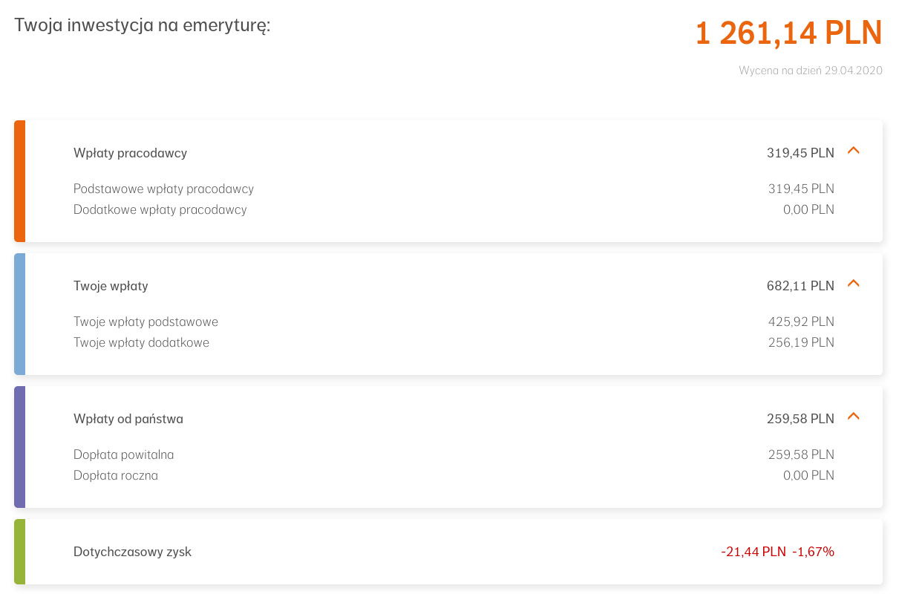
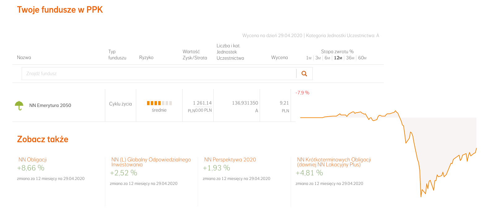
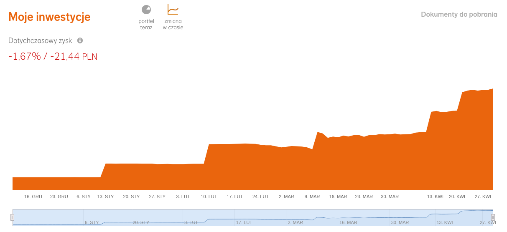

Conversation with 2345422802147713 at pon, 4 maj 2020, 09:53:21 on mateusz.stomski (facebook)
(09:53:20) Mateusz Stomski:

(09:54:19) Mateusz Stomski:

(09:55:43) Michael Grandson:
hehe to ja tle to jestem an plusie przy koncie oszczednosciowym :P
(09:56:10) Mateusz Stomski:

(09:56:30) Mateusz Stomski:
zobaczcie u środku wykresu zaraz po wpłacie
(09:56:34) Mateusz Stomski:
to jest początek marca
(09:56:46) Mateusz Stomski:
jak spadła wartośc
(09:57:00) Mateusz Stomski:
z 719zł do 650zł
(09:57:00) Michael Grandson:
ten maly pik
(09:57:35) Mateusz Stomski:
ale powoli zaczynało rosnąć, i przed następnym pikiem w górę robi się z tego 717
(13:01:03) Michael Grandson:
https://www.bankier.pl/wiadomosc/Polacy-bardziej-zainteresowani-wlasnym-domem-niz-mieszkaniem-7874435.html
(13:01:27) Michael Grandson:
Mat jmoze jak pozekasz to cale pietro kupisz dla sibie
(13:01:39) Michael Grandson:
czt tez kamienice :D
(13:02:40) Mateusz Stomski:
Ciekawe jak długo to potrawa
(13:43:22) Michael Grandson:
https://www.money.pl/gospodarka/beda-doplaty-dla-najemcow-mieszkan-nawet-1500-zl-miesiecznie-6506834959886465a.html
(13:43:31)
Konto zostało rozłączone i użytkownik nie jest już obecny w tej konferencji. Po nawiązaniu połączenia nastąpi ponowne dołączenie.